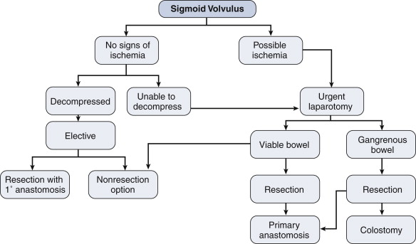

Volvulus of Colon
DEFINITION
Rotation of the gut on its own mesenteric attachment, producing
either partial and complete obstruction.
Caecal and sigmoid
Also occurs in transverse but very rarely.
D E A B M I M
EPIDEMIOLOGY
~10% of colonic obstructions
A reasonably common surgical emergency.
- much higher in non-Westernized countries; dietary
Mean age 50 sigmoid
Caecal ~younger 30-60, F>M
Risk Factors
Excessively mobile colon;
- anything that stretches the colon
Chronic constipation and lack of exercise
Typically elderly rest home
patients with chronic constipation and relatively atonic colons
High-fibre diet in non-West
Megacolon of any cause
- e.g. hypothyroidism, Parkinson, Hirschsprung, Chagas, pregnancy
D E A B M I M
AETIOLOGY
As above.
D E A B M I M
BIOLOGICAL BEHAVIOUR
Pathophysiology : Sigmoid
(~75%)
Disproportionately long colon
compared to mesenteric base
Allows sigmoid to rotate, usually
counterclockwise 15-25cm from anal verge
- degree of torsion varies from 180 (35%) to 360 (50%) to 540 (10%)
Obstructs and strangulates
But rarely perforates due
to thickened sigmoid
Pathophysiology : Caecal
(~25%)
Redundant R colonic mesentery.
Maybe 10% of the population have a cecum sufficiently mobile to tort
but far fewer do
- improper fusion of cecal / ascending colonic mesenteries
- restriction of bowel at a fixed point, e.g. adhesions, congenital
bands, obstruction lesions
--> most do a 180 to 360o twist around the mesenteric pedicle of
the ileocolic artery.
May be precipitated by colonoscopy, pregnancy, air-flight.
Often associated with vascular
compromise
Cecal Bascule
A variant of cecal volvulus where the cecum folds anteromedial,
causing a flap-valve occlusion.
Transverse (rare)
Middle age, 2:1 F/M
Treat as for cecal volvulus; may need extended R hemi.
Splenic Flexure Volvulus
Least common site; <1%
Congenital absence of gastrocolic, phrenocolic and splenocolic
ligaments
- or iatrogenic loss of those.
D E A B M I M
MANIFESTATIONS
Sigmoid
Obstruction
Often develops slowly and recurrent.
Distension, colicky pain and reduced flatus / stool (partial vs
complete)
Nausea, vomiting, dehydration and obstipation are usually late
features
Strangulation
Acute and less common presentation
Pain, progressing to sepsis
Caecal
SBO presentation
Often atypical and subtle.
Signs
Distended tympanic abdo with diffuse tenderness.
DRE: empty rectum.
Peritoneal signs and fever indicate possible strangulation
D E A B M I M
INVESTIGATIONS
Sigmoid
XR
Large twisted sigmoid loop like a bent inner tube
CT
- loop and whirl sign; grossly distended sigmoid
Gastrografin enema
- bird beak; old school
Caecal
XR:
Absent caecal shadow and
grossly distended loop - flipped up and left into epigastrium or
left hypochondrium; concavity points to RLQ.
'Coffee bean' appearance.
Single air fluid level in loop
May be atypical and subtle.
CT
Shows the volvulus; also whirl sign, bird's beak
D E A B M I M
MANAGEMENT
Sigmoid
Acute
Pass a rigid sigmoidosope to the site of the twist (us. 15cm)
- may need flex sig if higher twist.
Lubricate a large rectal tube (36F) and pass it into the twist
- leave it 2-3d
80% success rate
2% perforate, 2% mortality
But >50% recur
--> schedule elective surgery, preferably at same admission.
If fails then colonoscopic decompression
Operative : Acute
Much higher mortality than decompression and elective surgery
Generally only if strangulated (or if - rare - colonoscopic
decompression fails)
- needs to twist 180 to obstruct and 360 to strangulate.
Modified lithotomy position.
Sigmoid resection, either with anastomosis or as a Hartmann's
procedure.
- depending on patient physiology, comorbidities and disease factors
- favour primary anastomosis unless patient cold, unstable, acidotic
or bowel uncertain viability
- if unstable, with metabolic and hemodynamic instability, may be
able to leave in discontinuity with a view to second look and
possible anastomosis.
If gangrenous, resect without
untwisting to present flood of mediators and bacteria
Operative : Elective
To prevent recurrent in re-presenters.
- half will not represent, the other half may keep coming back
--> most surgeons offer resection after a second episode.
Small transverse incision, deliver loop and resect.
Sigmoidopexy is an option; good morbidity but recurrence rate up to
30%

Caecal
Uncommon
Requires surgery; high risk of bowel ischaemia
- colonoscopy reported by not recommended.
Detort caecum, de-rotate anticlockwise.
R hemicolectomy if doubtful viability.
If uncertain, do it anyway or plan a second look.
If viable, R hemi is still a safe option, safe with a very low
mortality
Usually can do a primary anastomosis.
Cecopexy is the alternative option.
- decompress by milking toward a rectal tube.
--> sutures hold poorly in a distended bowel wall.
--> then suture entire caecal length to the lateral abdo wall
using nonabsorbable sutures and with big seromuscular bites of bowel
and deep abdo wall bites.
- problem is recurrence of 15%, so perhaps better to just resect.
D E A B M I M
REFERENCES